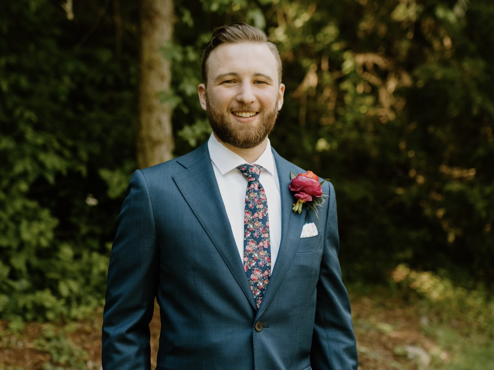

Scott Booma
About Me
My name is Scott Booma. I am a graduate of Clemson University with a degree in Finance and Accounting. I have been working at Ford Credit for 5 years now, and currently in my fourth position with the company. As my first job out of college I started as a Customer Service Rep working in Loss Prevention and doing my best to both help customers in during difficult times and minimize Ford Credit's losses on bad debts. After that I worked my way up to the position of Dealer Service Analyst where I spent many days (and holidays) buying paper for qualified customers and making strong relationships with the dealerships we serve. From there I took a bit of a detour from the traditional career path and found myself as an Audit Specialist - Wholesale. I worked with our outside auditing team to help minimize Ford Credit's wholesale floorplan risk by ensuring our collateral on dealership lots was all accounted for. In 2021 I made my way to the coveted Dealer Credit Analyst position. Here I am able to really apply my finance and accounting background by analyzing and reviewing dealership financials for risk issues and determining proper mitigating actions once the risks have been identified.
All the while during my journey here at Ford Credit I have experienced much personal growth as well. By starting my job at Ford Credit in Greenville, SC I gained true independence for the first time by leaving my family in Virginia and living alone. Since then I have found much love and joy through various new hobbies and people. I met the woman I now get to call my wife. I purchased a vintage VW bus with her that we have taken on many camping adventures. I have found a calling in the outdoors by taking up paddleboarding, mountainbiking, and skiing. Overall the last 5 years my life has been like a winding country road where I am driving a beat up old bus. Every turn brings something new, and while there may be some bumps along the way everything is met with a smile and optimism. I can't wait to see what the next fork in the road brings my way.
My desire to be a software engineer stems from my love for growth and creation. I am always looking for pathways to further my growth in my career and in my personal life. I have always had a need to create in my life, whether it was playing the saxophone as a child, making jewelry in college (bit of a free-spirit phase), or messing around in my little woodshop here at home today. I have also always been the "computer guy" in the family, fixing issues with the internet when they would arise (did you try turning it off and on again?). I feel that with the small amount of coding I have learned so far through this program I have found a new path for my life.